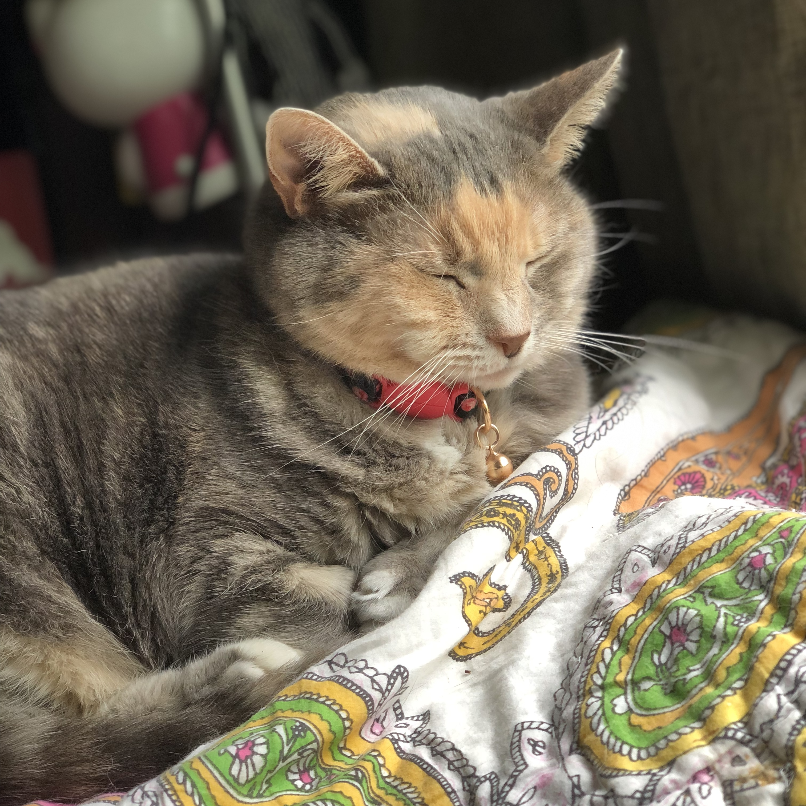

 This is Cairo. She's my main girl - twelve years old, half blind, a total drama queen, and a total attention w**re. We are unhealthily dependent on each other and I'll never have it another way. She keeps me safe at night and comforts me when I feel like crying because of having to wake up at 5:30 AM every morning. She's been with me for a little over five years and has helped me through some very difficult times, quite literally saving my life a few times. I love her so much.